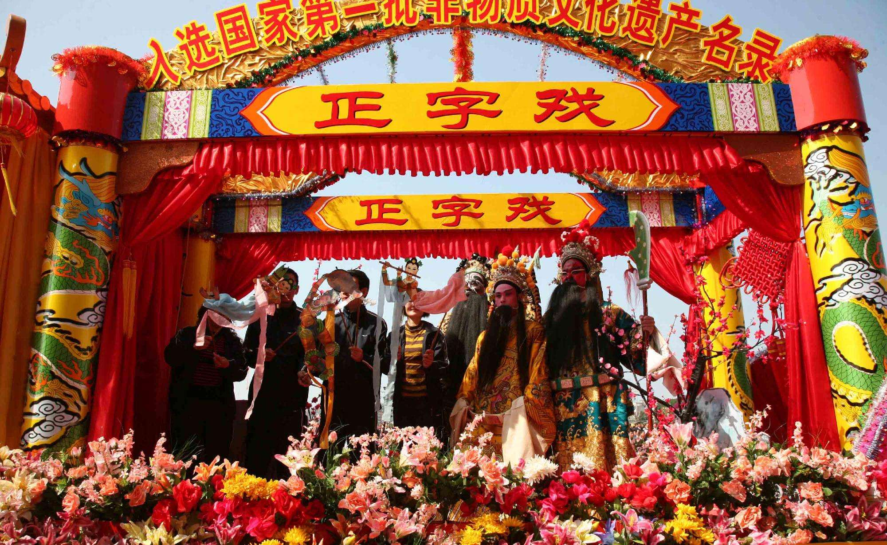
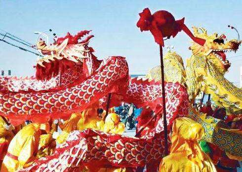
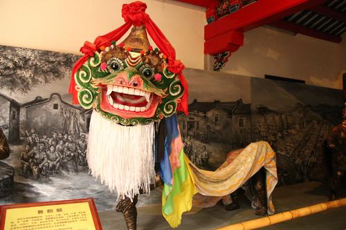
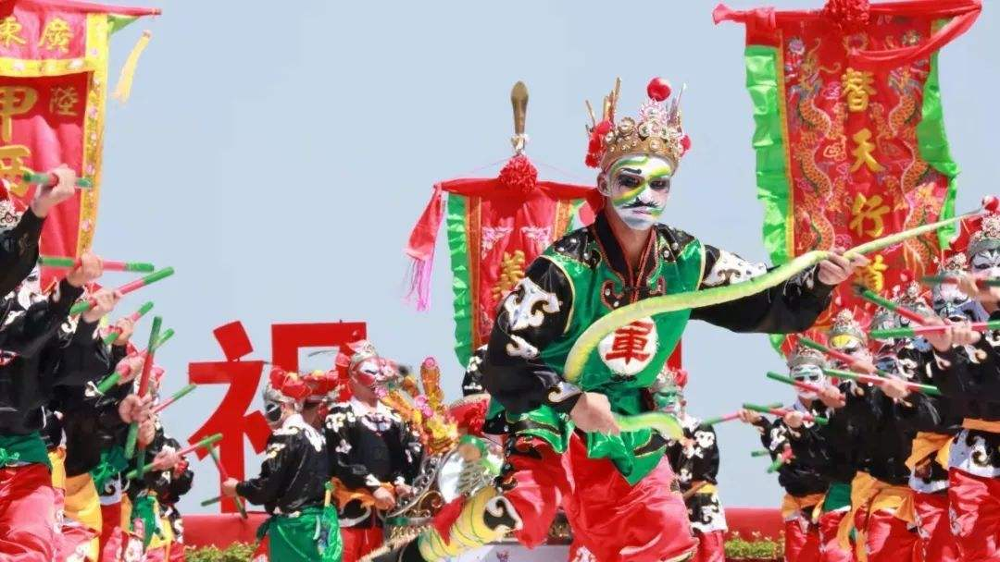

正字戏 本名正音戏，用中州官话唱念，是一个多声腔的古老稀有剧种。正字戏表演风格古朴、气魄宏大，特别擅长连台本戏。正字戏设12个行当，以正音曲和昆腔为主要声腔，分文戏和武戏。文戏的唱腔比较古老，以曲牌体的正音曲（大板曲）、唱牌子（即昆腔）为主，杂以乱弹、小调等。正音曲受弋阳腔、余姚腔、青阳腔、四平腔等四种腔调影响，一唱众和，多滚白、滚唱。武戏以做工尤其是打斗为主，没有或少有唱腔，分为大传戏、小传戏、本头和锦出四类。正字戏的昆腔，可以因剧目的同一首曲牌在不同角色的演唱中，以及在不同剧目或同一剧目的不同场次中，形成不同的情境。2006年5月20日，正字戏经中华人民共和国国务院批准列入第一批国家级非物质文化遗产名录。

汕尾滚地金龙 是一种广东省汕尾市民间舞蹈 [1] ，属于龙舞的一种，适合在节日喜庆场合表演，2006年5月被国家批准为非物质文化遗产。汕尾滚地金表情丰富、套路众多、舞段精彩、技艺兼善是这个舞蹈的基本特点。滚地金龙体现了龙能刚能柔，善静善动，能显能藏，自强不息的积极进取精神。“滚地金龙”始创于南宋，明嘉靖年间，黄氏光昭公一支从福建漳州移居广东陆丰大安镇南溪村，带来《滚地金龙演史传》的传本。

独角麒麟舞 至今为止还保留传统的表演方式，通常以农村的晒场、空地为表演场所，由一人舞动麒麟头、一人牵动麒麟尾。在大鼓、大锣、大镲、大唢呐的伴奏下，开始舞动麒麟，先朝天参拜三下（一拜天，祝风调雨顺，二拜地，祝五谷丰登，三拜人，祝健康平安），接着绕圆场和朝场地四个角落觅食，此时唢呐吹奏《吃四门》，然后在场地中间舞弄，表演出打滚、舐脚、洗须、咬骚等风趣动作及喜怒哀乐的情绪。

英歌舞 是汉族独具男子群体舞风采的3种民间舞蹈之一，它以人物为主题，以《水浒传》中梁山泊英雄大破大名府，营救卢俊义故事为内容的群众性广场情景舞，是一种把武术、舞蹈、戏剧融为一体的民间娱乐形式。被认为具有驱鬼神、镇邪恶、保平安、求福祉的作用，每逢春节、元宵、游神赛会等日子各地纷纷组织英歌舞排练及表演，已成为人们节日生活休闲娱乐健身的一种方式。
